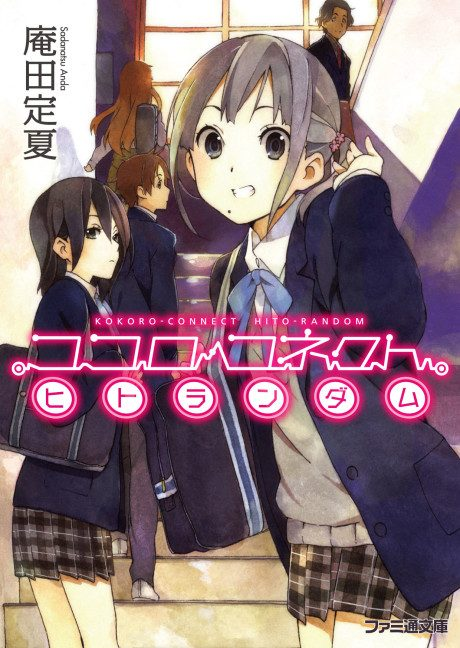

Anime
Anime
Light novel2012 · Drama, Romance, Slice of Life
Kokoro Connect
ココロコネクト
AniList7.5
Animeter—
Episodes13 ep
SourceVol. 5
Anime finished. Where does the story go next?
Start at Volume5
The 13 TV episodes cover volumes 1-3 and the OVA covers volume 4 (Michi Random), so continue with 'Clip Time'. Some listings number Clip Time as volume 4.5 rather than 5.
1411 end
Season 1Start reading here